Andrew Haynes
Howdy, I'm Andrew! I'm an incoming freshman at Princeton, where I plan on majoring in Linguistics and minoring in Computer Science and East Asian Studies. Broadly, I'm interested in exploring how computing can support endangered language revitalization via data systems and technology that empower community-driven preservation efforts.
I also love learning languages: I speak English (Native), Japanese (Heritage/N2), Mandarin (Intermediate), and Korean (Intermediate-Mid/ACTFL)!
If you're working on something related or have ideas to share, I'd love to hear from you!

✉️ andrewhaynes [at] princeton [dot] edu github linkedin instagram youtube substack
news
publications
gallery
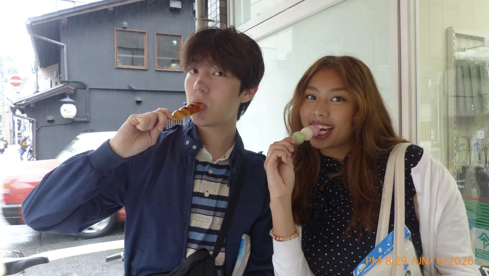
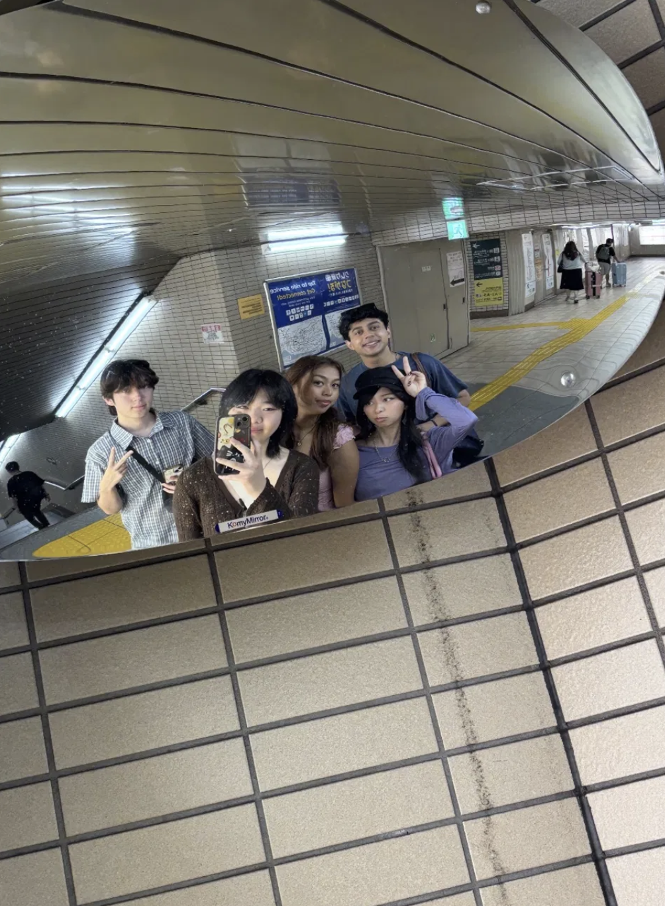
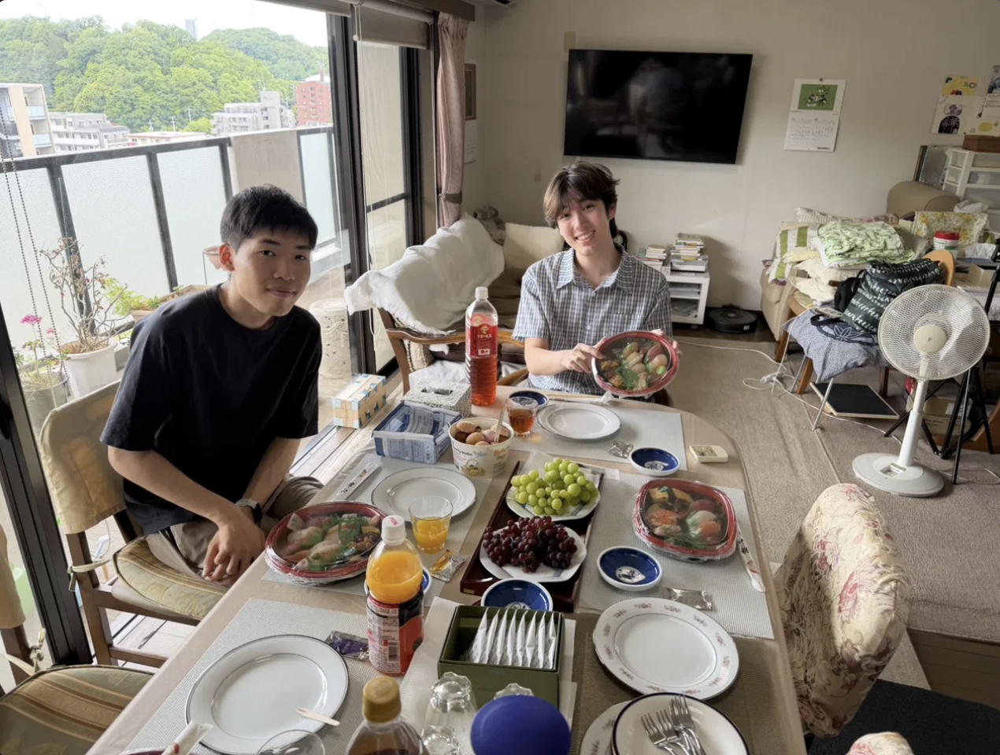

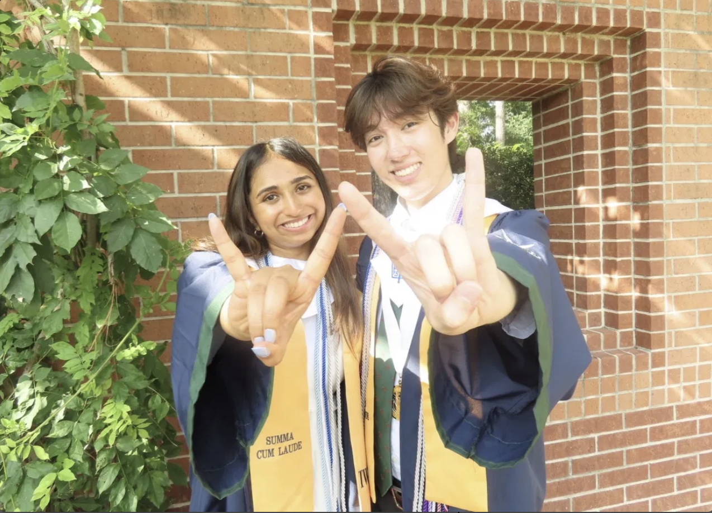
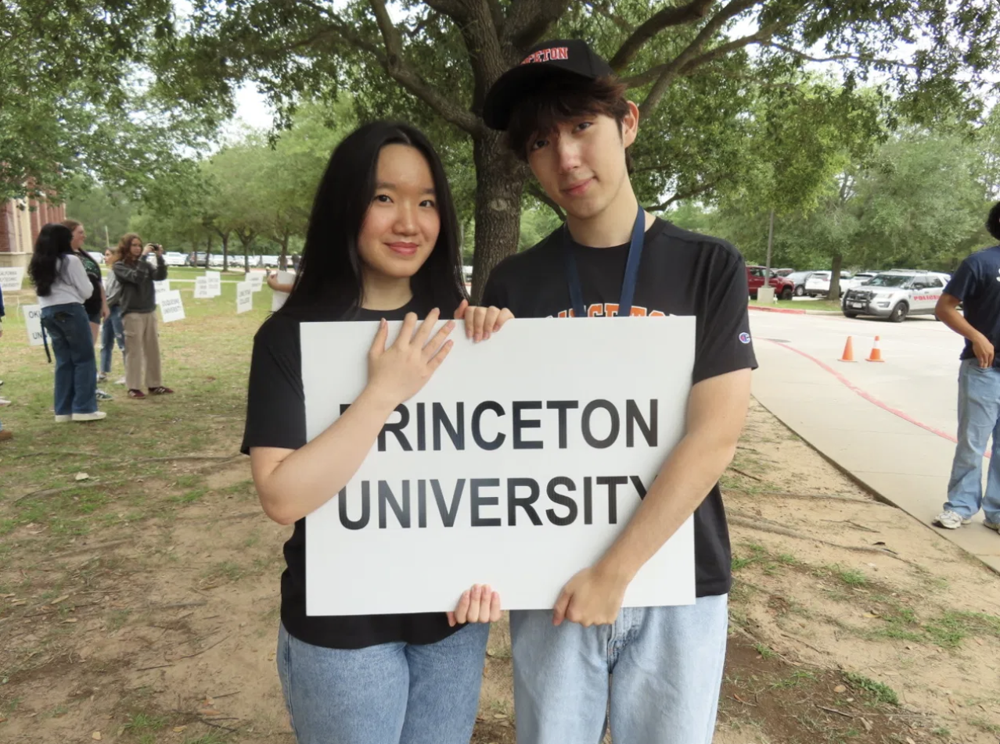
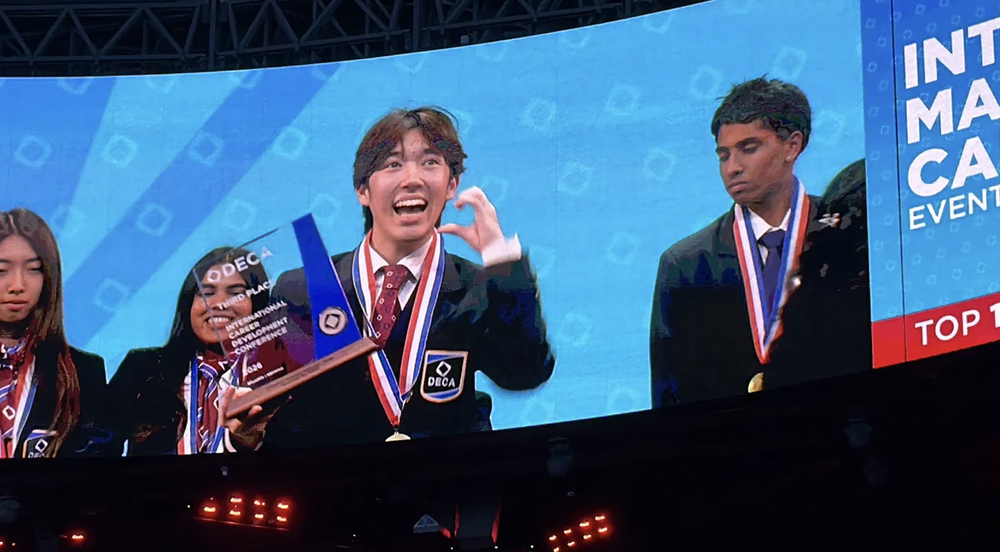

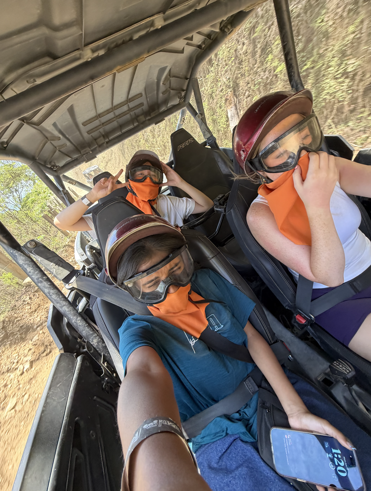
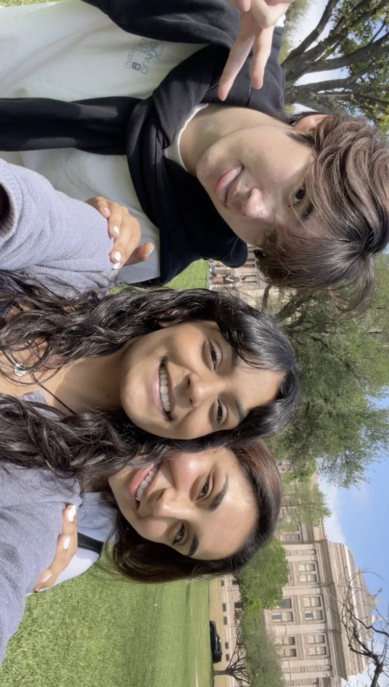
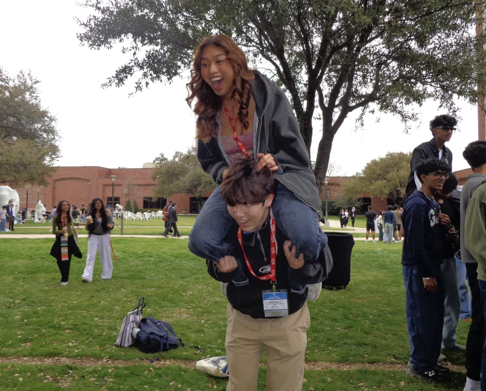
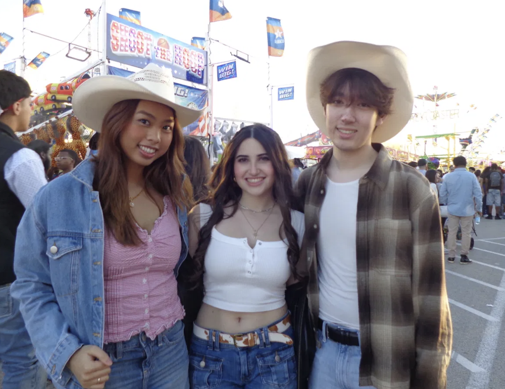


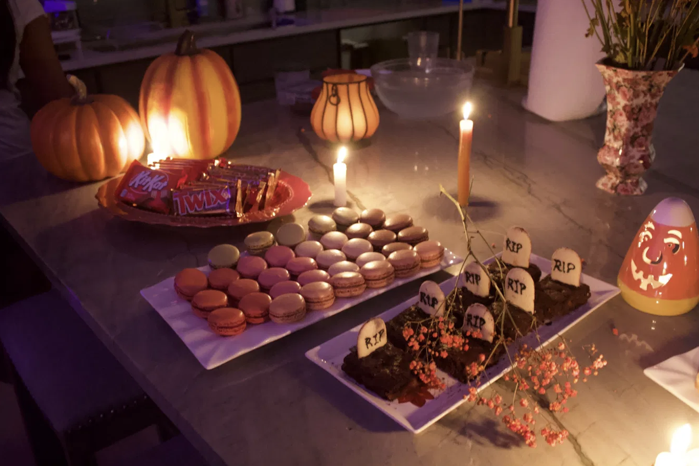